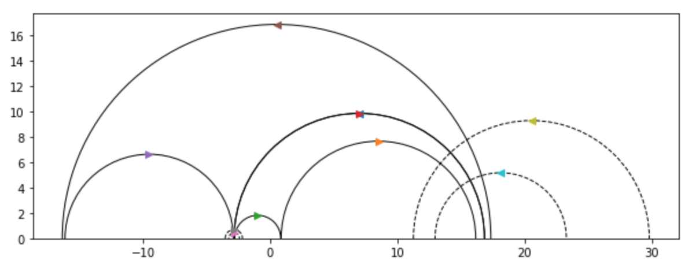
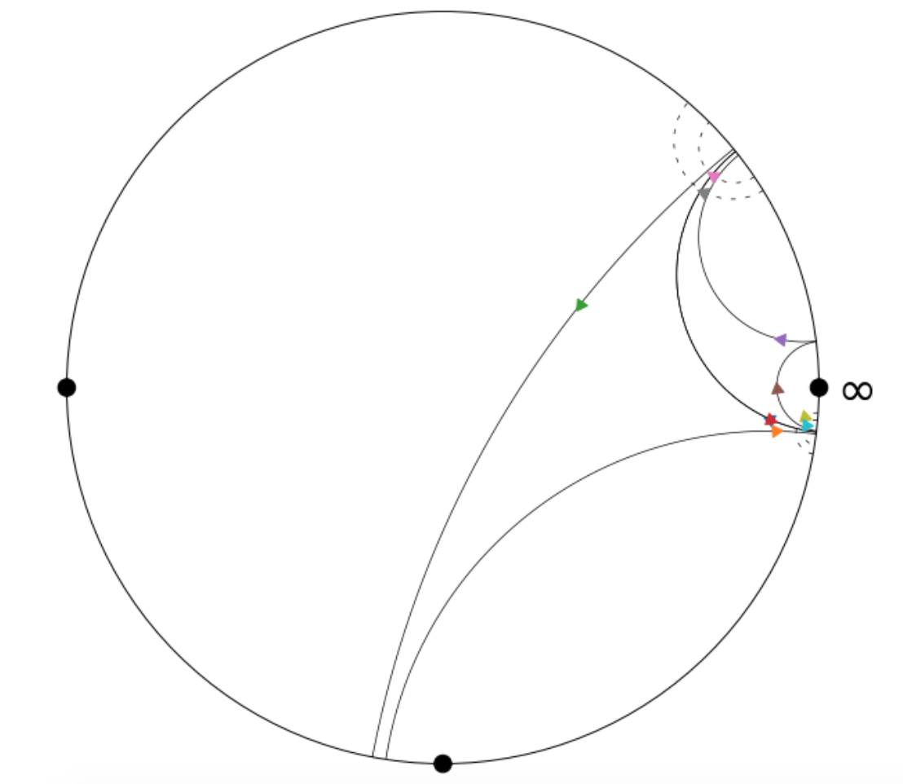
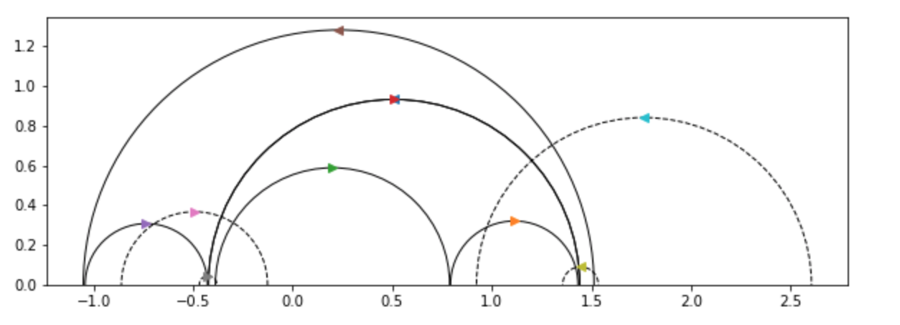
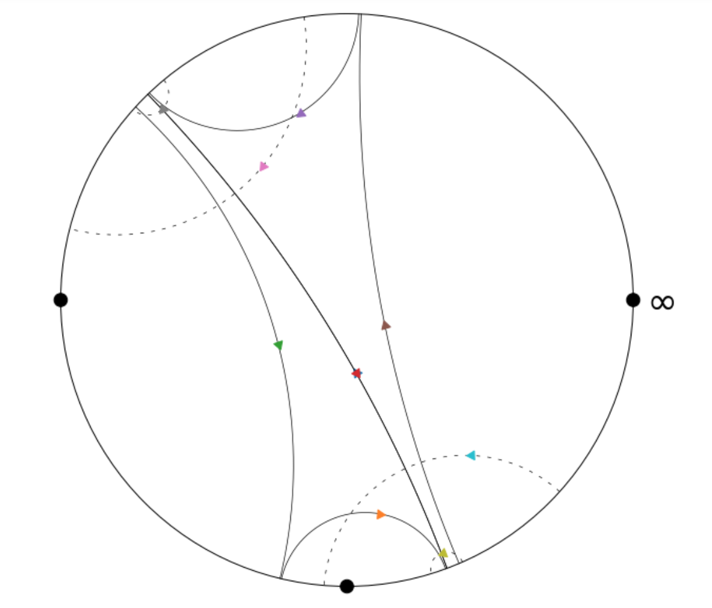
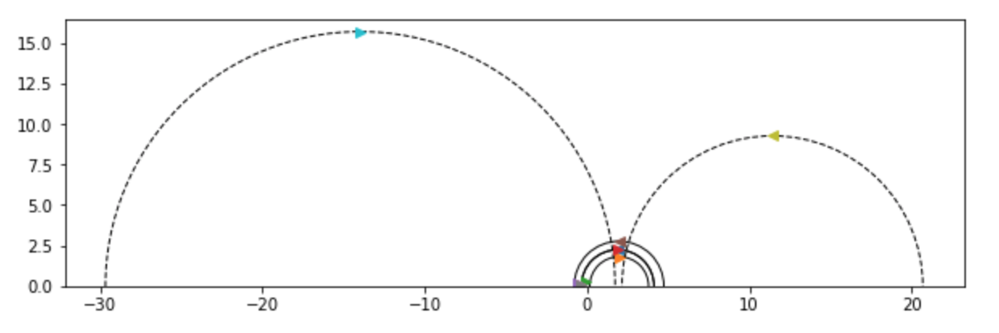
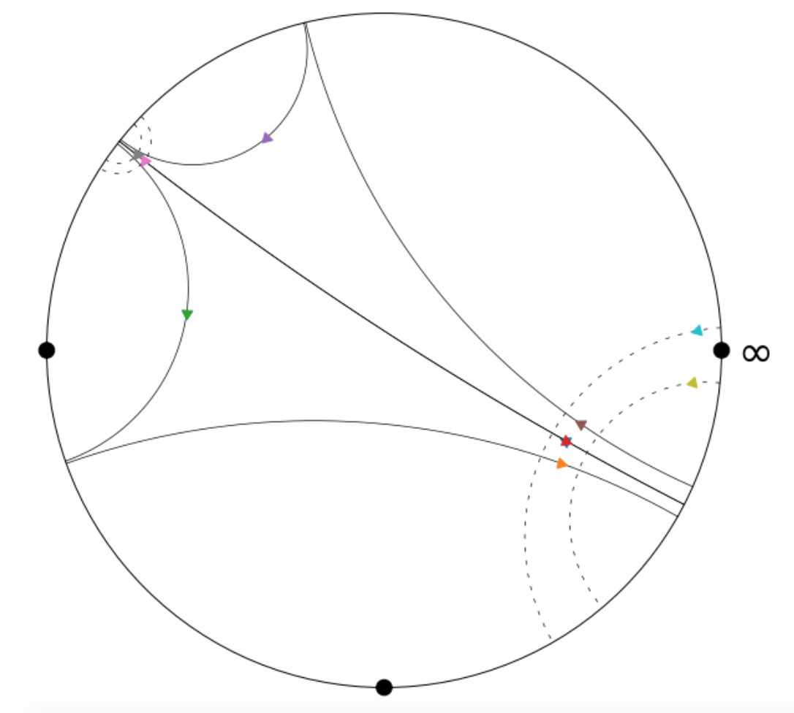
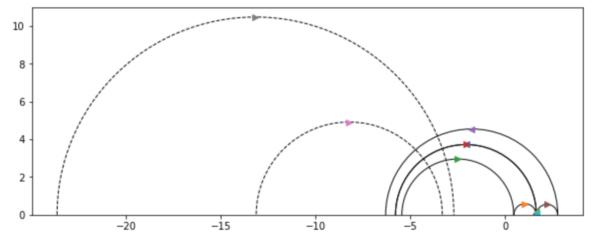
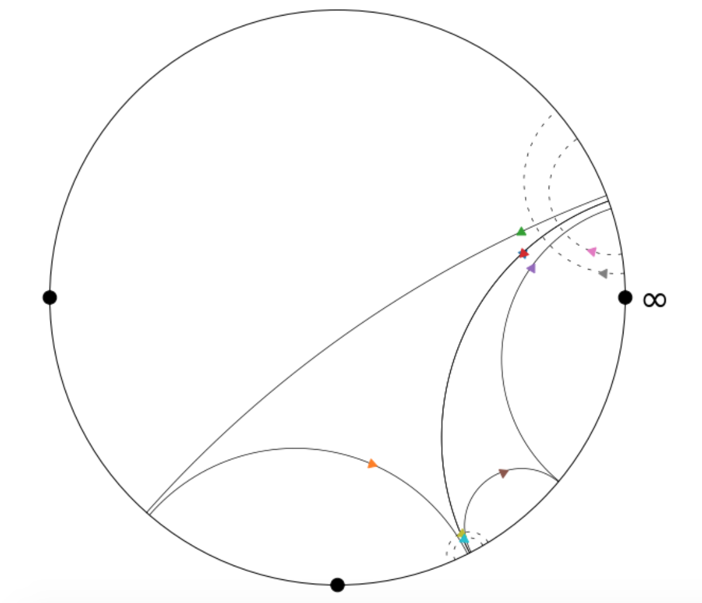
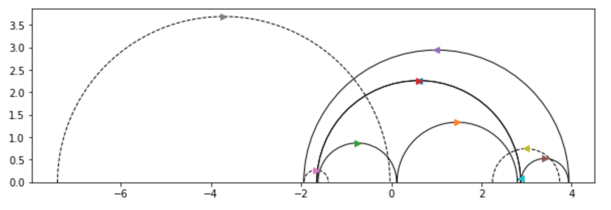
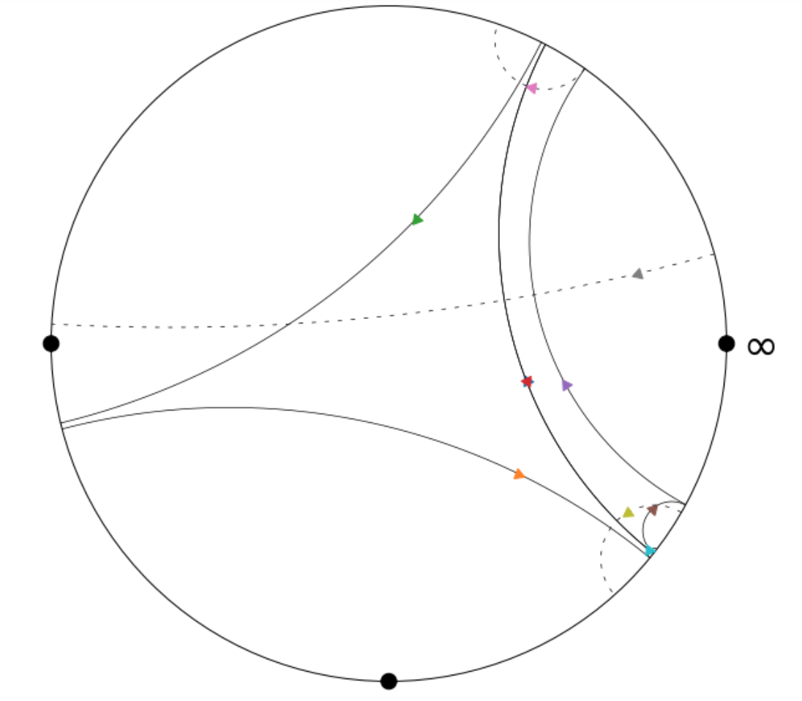

Rutgers DIMACS REU Research Log
Project Description
In the summer of 2020, I, along with
Colin Fan and
Saket Shah
worked to provide evidence for a variant of the
Ehrenpreis Conjecture
for cusped surfaces, via a pants decomposition using degenerate pants. We were mentored by Professor
Alex Kontorovich,
and also had the help of Professor
Jeremy Kahn. Our first goal for the summer was to produce
[using Python] a pants decomposition of the standard fundamental domain for the action of $SL_2(\mathbb{Z})$ on the hyperbolic upper half-plane.
Week One
Learned basics of hyperbolic geometry and the general theory behind
closed geodesics on the upper half plane modulo the action of $SL_2(\mathbb{Z})$.
Week Two
Learned more about the correspondence between equivalence classes of quadratic forms and conjugacy classes of closed geodesics.
We produced code that gives all closed geodesics of fixed length, using this correspodence. Still need to deal with some problems with efficiency of computation.
Week Three
Learned about the combinatorics of pants via "theta graphs" and the partitioning of cutting sequences. Using this reduction to a combinatorial problem,
we were able to write code that produces all pants with cusps with length in a given range.
Week Four
We produced functions that get all the geodesics used in a list of pants, and, by producing cuspidal geodesics which approximate
these closed ones, were able to produce a list of all eyes that can be derived from a given list of pants. We then converted our list of pants and eyes
into a matrix telling us which pants contain which closed geodesics, and similarly for eyes; in producing this matrix, we selected one orientation of the closed geodesic
to be positive (+1) and the other to be negative (-1); the semi-arbitrariness with which we chose which was positive and negative and potential issues with consistency
may need to be resolved next week.
With respect to this matrix, a valid covering of $SL_2(\mathbb{Z})$ corresponds an non-negative integer vector (non-zero) in the kernel of this matrix; furthermore, we would like a minimal such vector.
By the end of the week(end), we had managed to implement a linear program using PuLP, which produces a solution minimal with respect to the $L^1$ norm. In order to
produce a solution minimal in the $\ell^2$-norm (which is what we desire), we will have to use quadratic programming, hopefully at the beginning of next week.
Week Five
At the beginning of this week we figured out how to plug our boundary matrix into a quadratic program to get a solution minimal in the $\ell^2$-norm.
This way, we were able to minimize (roughly speaking) the variance in the pants’ coefficients, in an attempt to produce a relatively uniform cover of $SL_2(\mathbb{Z})$.
After this, we also had the chance to look at Professor Kahn’s code for producing quadratic forms and pants, and we ended up replacing our own functions that produce the
representatives of the narrow class group with the functions Professor Kahn had written for this purpose.
Professor Kahn’s functions accomplish this goal much faster than our own,
due largely to a difference in strategy: where we computed the continued fraction corresponding to each quadratic form’s larger root and checked if we had seen one of its permutations already,
that is, if we already had a representative of that class, Professor Kahn started by producing the matrices corresponding to each form, and the matrices’ "successors" a task computationally
roughly equivalent to computing the continued fraction of one element of the class. He then iterates over succesors until the starting matrix is returned to, and in this way produces a minimal representative
of each class while circumventing the redundant continued fraction calculations undertaken in our own code.
We ended up keeping the section of our code that produces pairs of pants
from a given list of geodesics, because our methods were fairly similar to Professor Kahn’s, whence we believe that our code’s computational efficiency should be comparable as well.
After integrating Professor Kahn’s code with our own, we were compute some more examples of covers of $SL_2(\mathbb{Z})$ minimal in the $\ell^2$-norm. The variance in coefficients, however, remains somewhat higher than desired,
or expected, and we hope to work on understanding why this is the case and resolving this issue next week. With regards to the potential consistency issues relating to choice of orientation that I mentioned last week,
it turns out that no such issues arise, since we only actually care about making the number of pants on each side of a given geodesic equal.
Week Six
This week we learned about shears, which essentially measure how different two compatible [in the sense that they share a cuff] pants are by
lining up the pants in the upper half plane and constructing the semicircle orthogonal to a particular pair of geodesics within each pants. After doing this for two compatible pairs of pants, the shear between the two
is then given by the hyperbolic distance between the semicircles orthogonal to two corresponding closed geodeics in each pair of pants.
To approach this goal, we wrote a function that computes the hyperbolic distance between two semicirlces in the upper half plane, and another function that computes the semicircle orthogonal
to two given semicircles in the upper half plane [and the x-axis]. To compute the former, we were able to take advantage of inversive coordinates’ nice parametrization of such semicircles,
and use the inner product with respect to the quadratic form $$Q = \begin{pmatrix} 0 & \frac{1}{2} & 0 \\\frac{1}{2} & 0 & 0\\ 0 & 0 & -1\end{pmatrix}$$
After this we wrote a function to map pants into a standard position in the upper half plane, and then wrote a function to align two compatible pairs of pants so that $\gamma$ and $\gamma^{-1}$ coincide [but with
opposite orientation, of course] in the desired positions. This function seemed to work as desired in most cases, although there still appear to be some kinks that will need to be worked out.
Here’s an example of the function’s output [which we’ve visualized using matplotlib]:

Here each pair of pants is represented by three semicircles, each of whose intersections with the x-axis are conjugate pairs of quadratic irrationals corresponding to
a representative of the equivalence class of the cutting sequence of the closed geodesic under the action of $SL_2(\mathbb{Z})$.
In the above visualization, each pair of pants has two smaller geodesics, which $"$flow$"$ to the right, and one larger geodesic
which encapsulates the smaller two, and whose orientation is reversed with respect to the smaller two; that is, it flows to the left.
Above, the first pair of pants is comprised of the geodesics marked with the brown, purple, and red arrows, while the second pair of
pants corresponds to the closed geodesics marked with the orange, green, and blue arrows [note: the blue arrow is behind the red arrow].
Here, $\gamma$ and $\gamma^{-1}$ correspond to the semicircles marked with the red and blue arrows, respectively; note that blue’s orientation
is opposite that of red.
Week Seven
This week we completed our computation of shears which included working out some consistency issues we had been having with the sign of the shear. We also implemented an almost
identical function that gives the "shear" between two pairs of pants that both contain a given closed geodesic $\gamma$ [instead of containing $\gamma$ and $\gamma^{-1}$]. With these
functions in hand, we were able to compute, for a given closed geodesic $\gamma$ and a fixed choice of pants containing $\gamma$, a table of the shears between all other pants containing $\gamma$ or $\gamma^{-1}$.
This in turn allowed us to find the inequalities needed to guarantee [via Hall’s marriage theorem] that a matching between between pants
of shear in $[1-\epsilon,1+\epsilon]$ exists. Next week we'll have to actually plug all this into our linear and quadratic programs, and work on adapting our program to include a notion of shearing between pants and eyes.
And because I really love pictures, I'll pause to note that this week we finally got some nicer visualizations showing shears between pairs of pants both in the Lobachevsky half plane as well as in the Poincaré disk; I've included a few nice ones below.










Week Eight
At the beginning of this week, we finally plugged everything into our linear program, producing an output which was a little difficult to parse. At this point,
our set of eyes had no role in the inequalities, so although we're allowing them into our potential solution set via the constraint that solutions lie in the kernel of our boundary
matrix, we were confounding the use of eyes on the "outside" [i.e., corresponding to $\gamma^{-1}$ for some $\gamma$ in our chosen list of "positively oriented geodesics"]
by not allowing them to "fill in" for pants to satisfy the requirement that the "outside parts" of the inequalities be greater than their inside counterparts [the constraint given by Hall’s marriage theorem]. We
were able to fix this by adding eyes into our inequalities, which only required a few straightforward modifications to our existing code. This left one problem–eyes could still be matched with eyes!
To resolve this, we added in some more inequalities: forcing the eyes in a given "inside interval" to have weighted sum less than that of the pants in the corresponding "outside interval" [that is, the interval
shifted by +1 and extended by $\epsilon$ on both sides], and conversely, forcing the eyes in a given outside interval to have weighted sum less than that of the pants in the corresponding "inside interval" [
i.e. the interval shifted by -1 and extended by $\epsilon$ on both sides]. These requirements combined allow us to match every eye to a pair of pants; combined with our earlier inequalities containing pants and eyes lumped
together, these restrictions force the existence of the matching we desire.
Week Nine
The last week of the program, I spent most of this week writing up our final paper and preparing our final presentation, which can be viewed
here. I also wrote
a brief reflection on my experience in this summer’s program, a portion of which I've shared below.
At the beginning of this summer I came into the DIMACS REU program not sure what to expect. Mathematically, in terms of the subject I’d be researching, and socially in a world that had recently shifted to exclusively virtual communications.
Over the next few weeks, reading papers, interacting with Colin and Saket, my coresearchers, and speaking with my mentor Alex Kontorovich; I quickly found that research can be scary–you are thrown in knowing almost nothing, and the more you learn,
the more you appreciate how little you know. This said, I just as quickly came to appreciate the exhilarating thrill of approaching the frontier of what one knows, and what is known collectively–just as a biologist might glimpse species new to them,
and occasionally, new to the world, so too as a student of mathematics, did I glimpse many objects foreign to me, only later becoming familiar with their habits, their myriad guises, their lookalikes, and their quirks. I learned that asking questions
is often the first sign of learning–being able to answer them is a somewhat less important validation step. What’s more, I learned that the importance of examples cannot be overstated.
That’s all I can think to write down right now, but I would
like to send my warmest thanks to all those who made the program so wonderful: Lazaros Gallos, Brooke Ogrodnik, Alex Kontorovich, Jeremy Kahn, and of course, my coresearchers Colin Fan and Saket Shah.
Relevant Articles
The Good Pants Homology and the Ehrenpreis Conjecture [pdf]
Jeremy Kahn and Vladimir Marković
Kahn and Marković’s proof of the original Ehrenpreis conjecture for cocompact surfaces.
The Modular Surface and Continued Fractions [pdf]
Caroline Series
A description of the correspondence between cutting sequences and closed geodesics in the hyperbolic plane.
Letter to Bill Duke on "Inversive Coordinates" [pdf]
Alex Kontorovich
An explanation of inversive coordinates and the correspondence between various representations of the hyperbolic plane.
Applications of Thin Orbits [pdf]
Alex Kontorovich
An introduction to the study of thin orbits and their various applications.
From Apollonius to Zaremba: Local-Global Phenomena in Thin Orbits [pdf]
Alex Kontorovich
A somewhat technical survey of recent work in demonstrating certain density versions of conjectured local-global phenomena of thin orbits, following work by Bourgain and Kontorovich.